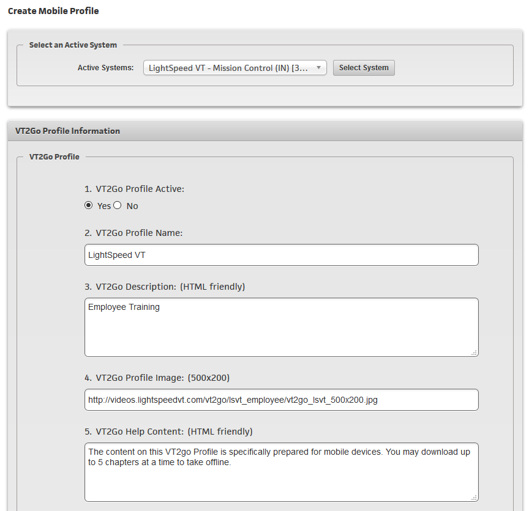
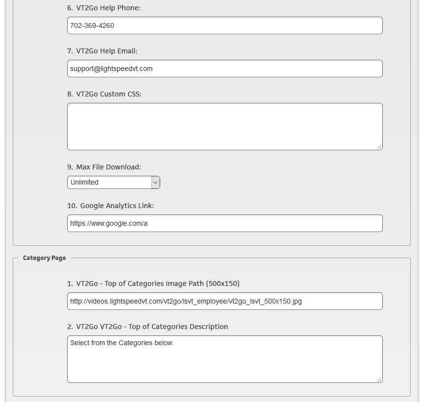
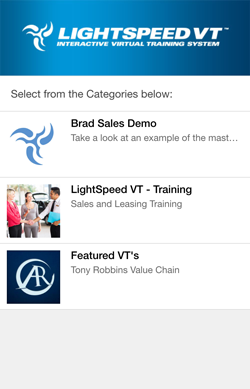
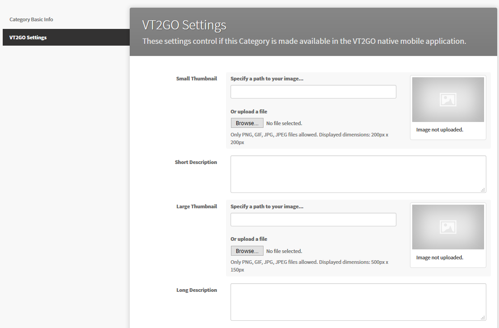
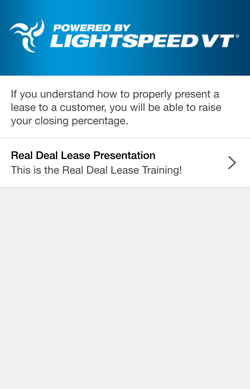
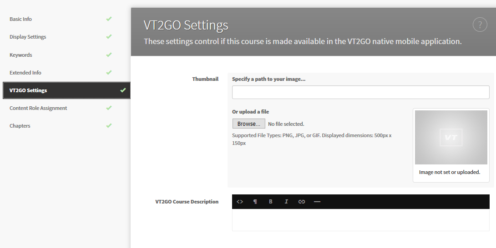
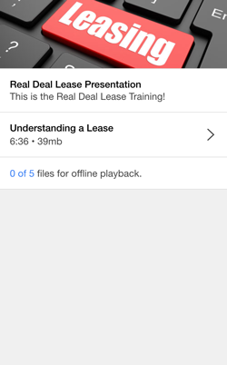
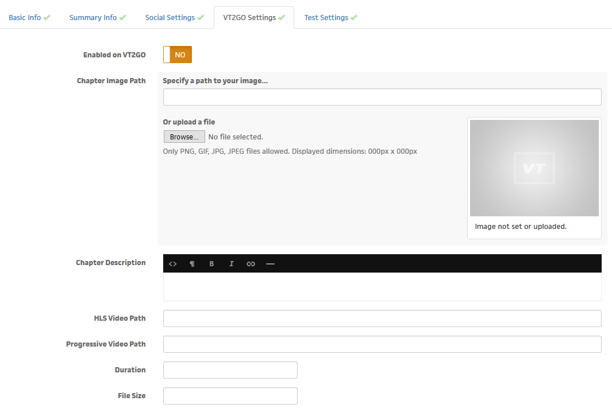
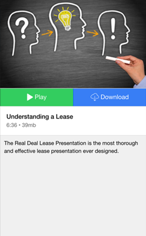

What is VT2GO?
What is VT2GO?
VT2GO is the VT Native Mobile App - the target devices for this App are iOS iPhones, iOS iPads and Android Phones.
This landing page describes it briefly for your end users, and has links to both the Apple App Store and the Google Play Store, for your convenience: http://www.vt2go.com
Currently this Mobile App is intended to be a companion to the web application, not necessarily instead of, or to use one or the other.
Overview
Clients and End Users want a "Mobile" experience! We can achieve the best of both worlds by making our Web App extremely mobile-friendly, and then leveraging the Mobile App (or Companion App) for functions that a Web App cannot perform.
The LSVT application is very feature rich and applies so many flexible business rules to both content and privileges that it would be extremely complex and very time intensive to build even a parallel Mobile App and keep it updated as frequently as the Web App gets updated.
Furthermore, an End User sitting down and taking full interactive training and testing on a Mobile App on a small PHONE is not the use case we are looking to solve. An end user will want a Mobile App to access short, daily training, or download content to take "on the go" for situations where there might not be a stable Internet connection. Below are the two approaches we can do, simultaneously, and have the “best of both worlds.”
Access - The VT2GO app is a free download from the Apple App Store and Google Play Store. Once downloaded and launched, users will sign in with their Web App login credentials. In other words, only ACTIVE (subscribed via the Web App) usernames will be able to successfully sign in from the Mobile App and utilize its unique features. The mobile app has been built to accommodate users with multiple profiles (and user names) at once, just as you might access two Twitter accounts from the same device - you would simply select which profile you want to utilize when launched.
Content - There will be different/alternate content available for the Mobile App vs. the Web App, with the understanding that: “Just because it is available on the Web App, doesn't mean it will automatically be available on the Mobile App.” Primarily, this is because not every piece of content is Mobile App-friendly. Unlike the Web App, the Mobile App isn't capable of serving up extensive interactivity, certain testing formats, etc.
Configuration Steps
Profile Image (500x200)
| Admin Area: | In VT2GO App: |
|---|---|
|  |
This is found under System Settings, under VT2GO Profile.
Categories Main Image (500x150)
| Admin Area: | In VT2GO App: |
|---|---|
|  |  |
This is found under System Settings, under VT2GO Profile.
Category Individual Images (200x200)
| Admin Area: | In VT2GO App: |
|---|---|
|  |
This is found under Create/Edit Category, VT2GO Settings
Category Large Image (500x150)
| Admin Area: | In VT2GO App: |
|---|---|
|  |
This is found under the same Create/Edit Category, VT2GO Settings area. This can be the same image used for the Categories Main Image (They're the same size)
Course Image (500x150)
| Admin Area: | In VT2GO App: |
|---|---|
|  |  |
This is found on Create/Edit Course, VT2GO Settings area.
Chapter Image (500x300)
| Admin Area: | In VT2GO App: |
|---|---|
|  |  |
This is found under Create/Edit Chapter, VT2GO Settings.
FAQs
-
Will all the existing content just "work?" - No, unfortunately, there is a step to do in order to format videos for this native mobile solution. The content department will have to address each existing client and determine what is desired to be available on the VT2GO App.
-
Will audio work? Yes, MP3 and MP4 files will work.
-
How do we prevent end users for subscribing for 1 day and downloading it all for offline use? For each client group, there is a parameter where we can set the number of videos/audios that are available for offline use. For example, if that parameter is set to "3", and the user has already downloaded three videos for offline viewing, they will need to delete one video, before they can download a new one. This places limits on how many downloads they are allowed to have at once.
-
Will the tests work? Not yet. Testing and quiz questions are planned for a future phase.
-
What about long files, such as 60 minute audio files? Content intended for the mobile app may be built differently than content for the web app. With this in mind, we can make a "Course" behave differently. For example, on the web application a 60 minute file may be cut into 5 minute segments, whereas on the native mobile app, this 60 minute segment may be played or downloaded as one continuous file, so the user can listen to it offline in the car or on an airplane.